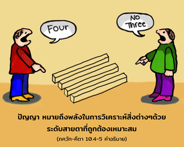

ปัญญา ความรู้ ความเป็นอิสระจากความสงสัยและความหลงผิด การให้อภัย สัจจะ การควบคุมประสาทสัมผัส การควบคุมจิตใจ ความสุขและความทุกข์ การเกิด การตาย ความกลัว ความไม่กลัว การไม่เบียดเบียน ความมีใจมั่นคง ความพึงพอใจ ความสมถะ การให้ทาน ความมีชื่อเสียงและเสียชื่อเสียง คุณสมบัติอันหลากหลายเหล่านี้ทั้งหมดของสิ่งมีชีวิต ข้าเป็นผู้สร้างเพียงผู้เดียว


คุณสมบัติต่างๆ ของสิ่งมีชีวิตไม่ว่าดี หรือเลวนั้นองค์กฺฤษฺณทรงเป็นผู้สร้างทั้งหมด และได้อธิบายไว้ ณ ที่นี้
ปัญญา หมายถึง พลังในการวิเคราะห์สิ่งต่างๆ ด้วยระดับสายตาที่ถูกต้องเหมาะสม และความรู้ หมายถึง การเข้าใจว่าอะไรคือวิญญาณ และอะไรคือวัตถุ ความรู้ทั่วไปที่ได้รับจากการศึกษาในมหาวิทยาลัยเกี่ยวเนื่องกับวัตถุเท่านั้นตรงนี้จะไม่ยอมรับว่าเป็นความรู้ ความรู้ หมายถึงรู้ข้อแตกต่างระหว่างวิญญาณและวัตถุ การศึกษาในสมัยปัจจุบันไม่มีความรู้เกี่ยวกับดวงวิญญาณเพียงแต่ดูแลธาตุวัตถุต่างๆ และดูแลความจำเป็นของร่างกายเท่านั้น ดังนั้น ความรู้ทางวิชาการจึงไม่สมบูรณ์
อสมฺโมห ความเป็นอิสระความสงสัย และความหลงผิดบรรลุได้เมื่อเราไม่ลังเล และเข้าใจปรัชญาทิพย์ ดำเนินไปอย่างช้าๆ แต่แน่นอนว่าจะเป็นอิสระจากความวิตกกังวล เราไม่ควรยอมรับสิ่งใดโดยไม่มีการพินิจพิจารณา ทุกสิ่งทุกอย่างควรรับไว้ด้วยความเอาใจใส่ และระมัดระวัง กฺษมา ความอดทน และการให้อภัยควรถือปฏิบัติ เราควรอดทน และให้อภัยกับความผิดเล็กน้อยของผู้อื่น สตฺยมฺ หรือสัจจะ หมายความว่าความจริงควรเสนอไปตามความจริงเพื่อประโยชน์ของผู้อื่น ความจริงไม่ควรเสนอไปอย่างผิดๆ ตามธรรมเนียมของสังคม ได้มีการกล่าวไว้ว่าเราควรพูดความจริงเมื่อเป็นที่พอใจของผู้อื่นเท่านั้น แต่นั่นไม่ใช่สัจจะ ความจริงนั้นควรพูดอย่างตรงไปตรงมาเพื่อผู้อื่นจะได้เข้าใจอย่างถูกต้องว่าความจริงนั้นคืออะไร หากบุคคลนี้เป็นขโมย และผู้คนได้รับการเตือนว่าเขาเป็นขโมยนั่นคือสัจจะ ถึงแม้ว่าบางครั้งสัจจะไม่เป็นที่พอใจเราก็ไม่ควรหลีกเลี่ยงที่จะพูด สัจจะ หมายความว่า ความจริงต้องควรได้เสนอออกไปเพื่อประโยชน์ของผู้อื่น นั่นคือคำนิยามของคำว่า สัจจะ
การควบคุมประสาทสัมผัสหมายความว่า ประสาทสัมผัสไม่ควรใช้ไปเพื่อความสุขส่วนตัวโดยไม่จำเป็น ไม่มีข้อห้ามเกี่ยวกับความจำเป็นที่เหมาะสมของประสาทสัมผัส แต่ความสุขทางประสาทสัมผัสที่ไม่จำเป็นอุปสรรคในความเจริญก้าวหน้าในวิถีทิพย์ ฉะนั้น ประสาทสัมผัสจึงควรถูกห้ามปรามจากการใช้โดยไม่จำเป็น ในทำนองเดียวกัน เราควรควบคุมจิตใจจากการคิดที่ไม่จำเป็นเช่นนี้ เรียกว่า ศม เราไม่ควรใช้เวลาของเราเที่ยวไปหาเงิน เพราะนั่นเป็นการใช้พลังแห่งความคิดที่ผิด จิตใจควรใช้ไปเพื่อเข้าใจความจำเป็นพื้นฐานของมนุษย์ และควรจะแสดงออกอย่างน่าเชื่อถือได้ พลังแห่งความคิดควรพัฒนาร่วมกับบุคคลผู้เชื่อถือได้ในพระคัมภีร์ เช่น นักบุญ พระอาจารย์ทิพย์ และพวกที่ความคิดพัฒนาสูงมากแล้ว สุขมฺ ความยินดีหรือความสุข ควรเป็นประโยชน์เพื่อพัฒนาความรู้ทิพย์แห่งกฺฤษฺณจิตสำนึก ในทำนองเดียวกัน สิ่งที่เจ็บปวดหรือก่อให้เกิดความทุกข์ก็คือไม่เป็นประโยชน์ในการพัฒนากฺฤษฺณจิตสำนึก สิ่งใดที่เป็นประโยชน์เพื่อพัฒนากฺฤษฺณจิตสำนึกควรรับไว้ และสิ่งใดที่ไม่เป็นประโยชน์ควรปฏิเสธ
ภว การเกิด ควรเข้าใจว่าเกี่ยวเนื่องกับร่างกายเพราะสำหรับดวงวิญญาณไม่มีทั้งการเกิด และการตาย ซึ่งกล่าวไว้แล้วในตอนต้นของ ภควัท-คีตา การเกิดและการตายสัมพันธ์กับร่างกายของเราในโลกวัตถุ ความกลัวเกิดเนื่องมาจากความวิตกกังวลเกี่ยวกับอนาคต บุคคลในกฺฤษฺณจิตสำนึกไม่มีความกลัว เพราะจากกิจกรรมของเขามั่นใจได้ว่าจะกลับคืนสู่ท้องฟ้าทิพย์คืนสู่เหย้าสู่องค์ภควานฺอย่างแน่นอน ฉะนั้น อนาคตจึงสว่างไสวมาก อย่างไรก็ดี บุคคลอื่นไม่รู้ว่าอนาคตจะเป็นเช่นไร และไม่รู้ว่าชาติหน้าจะเป็นอะไรจึงอยู่ในความวิตกกังวลตลอดเวลา หากเราต้องการเป็นอิสระจากความวิตกกังวลวิธีที่ดีที่สุดคือ เข้าใจองค์กฺฤษฺณและสถิตในกฺฤษฺณจิตสำนึกเสมอ เช่นนี้จะทำให้เราเป็นอิสระจากความกลัวทั้งหมด ใน ศฺรีมทฺ-ภาควตมฺ (11.2.37) กล่าวไว้ว่า ภยํ ทฺวิตียาภินิเวศตห์ สฺยาตฺ ความกลัวเกิดจากการที่เราซึมซาบอยู่ในพลังงานแห่งความหลง แต่พวกที่เป็นอิสระจากพลังงานแห่งความหลงมั่นใจว่าตนเองไม่ใช่ร่างกายวัตถุ แต่เป็นละอองอณูขององค์ภควานฺ และปฏิบัติในการรับใช้ทิพย์ต่อพระองค์จึงไม่มีอะไรน่ากลัว อนาคตของพวกเขาสว่างไสวมาก ความกลัวนี้เป็นสภาวะของบุคคลผู้ไม่มีกฺฤษฺณจิตสำนึก อภยมฺ หรือความไม่กลัว เป็นไปได้สำหรับบุคคลที่อยู่ในกฺฤษฺณจิตสำนึกเท่านั้น
อหึสา การไม่เบียดเบียน หมายความว่าเราไม่ควรทำสิ่งใดที่จะทำให้ผู้อื่นได้รับความทุกข์ หรือสับสน กิจกรรมทางวัตถุที่บรรดานักการเมือง นักสังคมสงเคราะห์ คนใจบุญมากมายให้สัญญานั้นไม่ได้ทำให้เกิดผลดีมาก เพราะว่าพวกนักการเมือง และคนใจบุญเหล่านี้ไม่มีวิสัยทัศน์ที่เป็นทิพย์ และไม่รู้ว่าอะไรคือประโยชน์ที่แท้จริงของสังคมมนุษย์ อหึสา หมายความว่า ผู้คนควรได้รับการฝึกฝนให้ใช้ร่างกายมนุษย์เพื่อให้ได้รับประโยชน์สมบูรณ์สูงสุดเท่าที่จะเป็นไปได้ ร่างกายมนุษย์มีไว้เพื่อความรู้แจ้งทิพย์ ดังนั้น ขบวนการใดๆ หรือคณะกรรมาธิการใดๆ ที่ไม่นำไปสู่จุดมุ่งหมายนี้กระทำการเบียดเบียนต่อร่างกายมนุษย์ บุคคลที่ส่งเสริมความสุขทิพย์ในอนาคตของผู้คนโดยทั่วไปเรียกว่าผู้ไม่เบียดเบียน
สมตา แปลว่าความมีใจมั่นคง หมายถึง ปราศจากความยึดติด และความเกลียดชัง การยึดติดมาก หรือการรังเกียจมากไม่ใช่เป็นสิ่งที่ดีที่สุด โลกวัตถุนี้ควรยอมรับโดยปราศจากการยึดติด หรือความรังเกียจ อะไรที่เอื้ออำนวยต่อการดำเนินงานในกฺฤษฺณจิตสำนึกควรยอมรับไว้ และอะไรที่ไม่เอื้ออำนวยควรปฏิเสธ เช่นนี้ เรียกว่า สมตา หรือความมีใจมั่นคง บุคคลในกฺฤษฺณจิตสำนึกไม่มีอะไรที่จะปฏิเสธ และไม่มีอะไรที่ต้องยอมรับนอกจากว่าสิ่งนั้นมีประโยชน์ใช้สอยในการดำเนินงานในกฺฤษฺณจิตสำนึก
ตุษฺฏิ ความพึงพอใจ หมายความว่า เราไม่ควรกระตือรือร้นในการสะสมสิ่งของวัตถุมากยิ่งขึ้นด้วยกิจกรรมที่ไม่จำเป็น เราควรพึงพอใจกับสิ่งต่างๆ ที่ได้รับมาด้วยพระกรุณาธิคุณขององค์ภควานฺ เช่นนี้เรียกว่า ความพึงพอใจ ตป หมายถึง ความสมถะหรือการบำเพ็ญเพียร มีกฎเกณฑ์มากมายในคัมภีร์พระเวทที่นำมาปฏิบัติได้ ณ ที่นี้ เช่น การตื่นนอนแต่เช้า และการอาบน้ำ บางครั้งยากลำบากมากที่ต้องตื่นนอนแต่เช้าตรู่แต่ความยากลำบากใดๆ ที่เราอาสาปฏิบัติ และอาจได้รับความทุกข์เช่นนี้เรียกว่าการบำเพ็ญเพียร ในทำนองเดียวกัน มีข้อกำหนดให้อดอาหารในวันสำคัญของเดือน เราอาจไม่มีแนวโน้มที่จะปฏิบัติการอดอาหารเช่นนี้ แต่เนื่องจากความมุ่งมั่นที่จะเจริญก้าวหน้าในศาสตร์แห่งกฺฤษฺณจิตสำนึกเราควรยอมรับความลำบากทางร่างกายเช่นนี้เมื่อได้รับคำแนะนำ อย่างไรก็ดี เราไม่ควรอดอาหารโดยไม่จำเป็น หรือขัดต่อคำสั่งสอนของพระเวท และไม่ควรอดอาหารเพื่อจุดมุ่งหมายทางการเมืองเพราะอยู่ในระดับอวิชชา ตามคำอธิบาย ภควัท-คีตา สิ่งใดที่ทำไปในระดับอวิชชาหรือตัณหาจะไม่ทำให้เจริญก้าวหน้าในวิถีทิพย์ สิ่งใดที่ทำไปในระดับแห่งความดีทำให้เราเจริญขึ้น อย่างไรก็ดี การอดอาหารตามคำสั่งสอนของคัมภีร์พระเวทจะประเทืองความรู้ทิพย์
เกี่ยวกับการให้ทานนั้น เราควรให้ห้าสิบเปอร์เซ็นต์ของรายได้เพื่อจุดมุ่งหมายที่ดี แล้วอะไรคือจุดมุ่งหมายที่ดี นั่นก็คือการปฏิบัติที่สัมพันธ์กับกฺฤษฺณจิตสำนึก เช่นนี้ไม่เป็นเพียงจุดมุ่งหมายที่ดีเท่านั้น แต่ยังเป็นจุดมุ่งหมายที่ดีที่สุด เพราะว่าองค์กฺฤษฺณทรงดีจุดมุ่งหมายของพระองค์ก็ทรงดีเช่นกัน ดังนั้น การให้ทานควรให้กับบุคคลผู้ปฏิบัติในกฺฤษฺณจิตสำนึก วรรณกรรมพระเวทได้กล่าวไว้ว่าการให้ทานควรให้กับพราหมณ์ หรือ พฺราหฺมณ แบบนี้ยังมีการถือปฏิบัติกันอยู่ ถึงแม้ว่าจะไม่ดีทีเดียวตามคำสั่งสอนของพระเวท แต่คำสั่งสอนก็คือการให้ทานควรให้แก่ พฺราหฺมณ เพราะเหตุใดเพราะ พฺราหฺมณ ปฏิบัติในการพัฒนาความรู้ทิพย์ที่สูงกว่าเป็นผู้ที่อุทิศตนเสียสละชีวิตทั้งชีวิตในการเข้าใจ พฺรหฺม ชานาตีติ พฺราหฺมณห์ ผู้ที่รู้ พฺรหฺมนฺ เรียกว่า พฺราหฺมณ ดังนั้น การให้ทานจึงถวายให้ พฺราหฺมณ เพราะท่านปฏิบัติในการรับใช้ทิพย์อยู่เสมอจึงไม่มีเวลาทำมาหาเลี้ยงชีพ วรรณกรรมพระเวทกล่าวว่าการให้ทานควรให้กับผู้ที่อยู่ในระดับชีวิตสละโลก สนฺนฺยาสี ด้วยเช่นกัน สนฺนฺยาสี ภิกขาจารไปตามบ้านไม่ใช่เพื่อเงินแต่เพื่อจุดมุ่งหมายในการเผยแพร่หลักธรรม ระบบก็คือพวก สนฺนฺยาสี ไปตามบ้านเพื่อปลุกคฤหัสถ์ให้ตื่นจากอวิชชา เพราะพวกคฤหัสถ์ปฏิบัติภารกิจทางครอบครัวจนลืมจุดมุ่งหมายที่แท้จริงของชีวิต การปลุกกฺฤษฺณจิตสำนึกให้พวกคฤหัสถ์จึงเป็นภารกิจของ สนฺนฺยาสี ในรูปของภิกขุที่ไปเยี่ยม และส่งเสริมให้คฤหัสถ์มีกฺฤษฺณจิตสำนึก ดังที่ได้กล่าวไว้ในคัมภีร์พระเวทว่า เราควรตื่นธรรม และบรรลุถึงสิ่งที่ควรจะได้รับในชีวิตร่างมนุษย์นี้ ความรู้ และวิธีการนี้ สนฺนฺยาสี เป็นผู้แจกจ่าย ดังนั้น การให้ทานจึงควรให้แก่ผู้ที่อยู่ในระดับชีวิตสละโลก ให้แก่ พฺราหฺมณ และให้กับพวกที่มีจุดมุ่งหมายที่ดีในทำนองเดียวกันนี้ ไม่ใช่ไปให้แก่พวกที่ชอบทำตามอำเภอใจ
ยศ ชื่อเสียง ควรเป็นไปตามที่องค์ ไจตนฺย ตรัส บุคคลมีชื่อเสียงดีเมื่อมาเป็นสาวกผู้ยิ่งใหญ่นั่นคือชื่อเสียงที่แท้จริง หากผู้ใดมาเป็นบุคคลผู้ยิ่งใหญ่ในกฺฤษฺณจิตสำนึก และเป็นที่รู้โดยทั่วกันเขาเป็นผู้มีชื่อเสียงที่แท้จริง นอกนั้นจะไม่ถือว่าเป็นผู้มีชื่อเสียง
คุณสมบัติทั้งหลายเหล่านี้ปรากฏอยู่ทั่วจักรวาลทั้งในสังคมมนุษย์ และในสังคมเทวดา มีรูปแบบของมนุษย์มากมายในดาวเคราะห์อื่นๆ และคุณสมบัติเหล่านี้ก็มีอยู่ สำหรับผู้ที่ปรารถนาความเจริญก้าวหน้าในกฺฤษฺณจิตสำนึก องค์กฺฤษฺณทรงสร้างคุณสมบัติทั้งหลายเหล่านี้แต่บุคคลจะพัฒนาด้วยตนเองภายใน ผู้ปฏิบัติในการอุทิศตนเสียสละรับใช้องค์ภควานฺจะพัฒนาคุณสมบัติที่ดีทั้งหลาย ซึ่งพระองค์ทรงเป็นผู้จัดการ
ทุกสิ่งทุกอย่างที่เราพบไม่ว่าดีหรือเลวองค์กฺฤษฺณทรงเป็นแหล่งกำเนิด ไม่มีสิ่งใดปรากฏตัวเองในโลกวัตถุนี้ที่ไม่ได้อยู่ในองค์กฺฤษฺณ นั่นคือความรู้ ถึงแม้เราทราบว่าสิ่งต่างๆ สถิตแตกต่างกันไปเราควรรู้แจ้งว่าทุกสิ่งทุกอย่างหลั่งไหลมาจากศฺรีกฺฤษฺณ